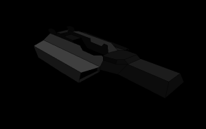

The situation...
In civilian space around the moons of Saturn, a cargo ship (designation: Iron Sigourney) lies dormant, engines absent of a familiar rumble, exterior lighting barely visible. Locals in the sector have reported that the ship is unresponsive to communications and transmissions.
You are one of the security officers assigned to investigate the ship and report activity to Avalon Patrol. With your standard issue environment suit and trusty sidearm, you begin the docking sequence…